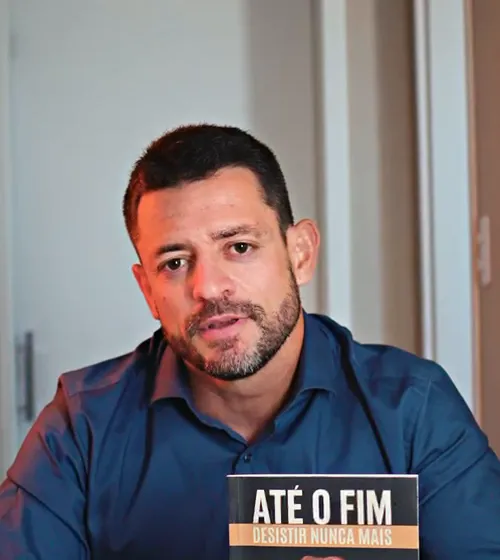

O livro que um Sargento das Forças Especiais escreveu para quem está pensando em desistir
9 missões e uma Missão Final. Cada uma termina com uma ordem prática para você começar hoje. Tudo o que 17 anos de Exército, a dor, a disciplina e a fé ensinaram a Thiago Gonçalves Bittencourt, veterano das Forças Especiais.
E-book em PDF, acesso na área de membros · Garantia de 7 dias
Mais de 1.000 livros vendidos.
Este livro é para você se alguma destas frases já passou pela sua cabeça:
- "Eu começo as coisas e não termino."
- "Fiquei sem força e ninguém percebeu."
- "Minha cabeça está cheia de coisa ruim e eu não consigo desligar."
- "Tenho medo de dar o próximo passo e dar tudo errado."
- "Todo mundo depende de mim, e eu não tenho em quem me apoiar."
- "Já pensei em desistir mais vezes do que tenho coragem de contar."
Se você se reconheceu em pelo menos uma, continue lendo.
Quem pensa em desistir quase sempre está tentando vencer a guerra inteira de uma vez.
Carrega a família, o trabalho e as contas sozinho. Escuta as vozes erradas. E, quando olha para tudo o que falta, o peso fica maior do que a força.
Aí vem o cansaço. Depois a dúvida. E, um dia, a frase que ninguém quer dizer em voz alta: "não dá mais".
Isso tem saída. E ela começa pelo jeito como você luta.
Eu aprendi isso no curso de Comandos.
Era perto de meia-noite. Ainda faltava uma última missão: uma orientação noturna, horas no escuro, em silêncio, com uma bússola na mão. O corpo já estava no limite.
Enquanto esperávamos, um aluno começou a repetir que depois dali mandariam a gente atravessar o mar. Que seria horrível. Repetia sem parar.
Em poucos minutos, dois alunos pediram para sair. Foram embora antes da orientação começar.
O cansaço não derrubou aqueles dois. A mente derrubou.
Eu fiquei quieto, respirando fundo e repetindo por dentro: até o fim, até o fim, até o fim.
Não vou fingir que nunca pensei em desistir. Teve madrugada em que as pernas tremiam e a mente gritava para parar. O que me segurou foi outra coisa, porque mais forte que os outros eu nunca fui. Meu foco estava no próximo minuto, no próximo exercício, na próxima tarefa.
Quem chega ao fim não é o mais forte. É quem cumpre a próxima missão.
Depois de 17 anos de farda, virei empresário e abri operações internacionais. E encontrei a mesma guerra dentro das empresas, das casas e das cabeças das pessoas. De farda ou de terno, numa selva ou num escritório, ela se vence do mesmo jeito: uma missão por vez.
Por isso o Até o Fim é dividido em missões.
Cada uma termina com uma ordem prática para você começar hoje, até a "Missão concluída".
- Missão 01 · O poder das palavras. O Ciclo da Vitória: escreva, fale, sinta, aja. O comando da sua mente passa a ser seu.
- Missão 02 · Dor, o professor silencioso. A conversa com a dor: dê nome a ela e pergunte o que ela veio ensinar.
- Missão 03 · Do medo do desconhecido às pequenas vitórias. Como fazer do medo uma bússola, com planejamento, conselho e fé.
- Missão 04 · Blindagem mental contra a negatividade. Como parar de dar palco para as vozes que não constroem nada.
- Missão 05 · Liderar é levantar os caídos. Os 3 perfis que existem em toda tropa (e em toda empresa), e quando cortar o que puxa você para trás.
- Missão 06 · Rede de apoio, a força de retaguarda. O mapa de 3 colunas: quem fortalece você, quem é neutro e quem drena a sua força.
- Missão 07 · A fé como força de combate. O escudo que protege quando você não vê o caminho.
- Missão 08 · Quando a fraqueza virou arma. Como deixar de ser o personagem e virar o jogador da sua vida.
- Missão 09 · A ilha que você nunca conheceu. Escolha o barco que você começou e ainda não terminou, e leve até o fim.
- Missão Final · O Renascimento e o Legado. Escreva tudo o que você quer deixar para trás, destrua esse papel e comece a sua nova versão.
O que dizem os leitores:
"Cada missão deste livro [é] um ensinamento profundo, simples, objetivo e, o que julgo mais importante de tudo, aplicável de forma rápida em nossa transformação. Conhecimento sem aplicação é apenas entulho de informação. 'Até o fim' com certeza é um livro que o conhecimento sai do papel pra vida real."
"Estou lendo o livro e é simplesmente uma lição de vida, todo pai, marido e filho deveria ler."
"Ontem terminei teu livro. Não queria me apressar, queria curtir cada capítulo, cada missão (...) é um livro que não dá de ler uma vez só (...) me identifiquei com várias missões suas de não desistir, cair, voltar mais forte (...) cada vez que tiver meio para baixo, já vou direto no teu livro."
"A caminho de Inverness, Escócia. Aprendendo um monte com os teus ensinamentos."

Quem é o Sargento Bittencourt
Thiago Gonçalves Bittencourt é Sargento veterano das Forças Especiais do Exército Brasileiro.
- 17 anos no Exército Brasileiro
- 15 cursos operacionais, primeiro colocado na maioria, em especial Ações de Comandos, Sniper e Mergulho
- Instrutor dos cursos de Comandos, Sniper e Mergulho
- Hoje é empresário, abriu operações internacionais e treina líderes e equipes de empresas em liderança sob pressão
- Faixa marrom de jiu-jitsu, MBA em Negócios Internacionais, pai de duas filhas
Antes do gorro preto, ele foi um menino magrelo, de óculos e voz fina, que apanhava na escola. Escreveu este livro para quem hoje se sente assim.
O livro inteiro, com as 10 missões, por
R$24,90.
Menos que um lanche no fim de semana. O lanche acaba em dez minutos. Este livro, como disse um leitor, "não dá de ler uma vez só": você volta a ele toda vez que a vida apertar.
Pagamento seguro pela Hotmart, no Pix ou no cartão.
Garantia de 7 dias.
Leia, comece as primeiras missões. Se não for para você, peça o reembolso pela Hotmart em até 7 dias e receba todo o valor de volta. Sem perguntas.
Comprei, e agora?
- Você paga no Pix ou no cartão e recebe a confirmação no seu e-mail.
- O acesso à área de membros da Hotmart chega no mesmo e-mail.
- Lá está o e-book em PDF: abra no celular ou no computador e comece a Missão 01 no mesmo dia.
Perguntas rápidas
Preciso ser militar para entender?
Não. O livro usa a experiência militar para falar da vida de qualquer pessoa: trabalho, família, dinheiro, medo, recomeço.
É um livro religioso?
A fé aparece porque fez parte da história do autor, e tem uma missão dedicada a ela. O livro é para todo mundo que quer parar de desistir.
Em quanto tempo eu leio?
Dá para ler em poucos dias. O valor está em cumprir cada missão.
E se eu não gostar?
Você tem 7 dias de garantia. Pede o reembolso e recebe tudo de volta.
Desistir não é opção. Até o fim.
Quero começar a primeira missão · R$ 24,90